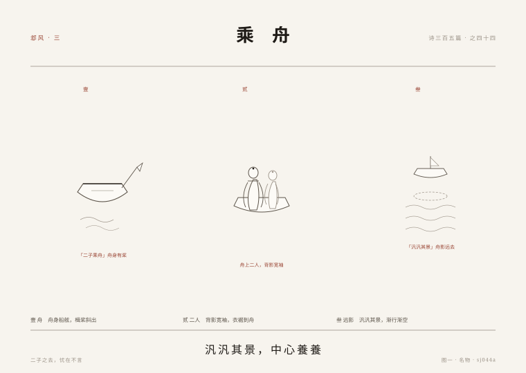
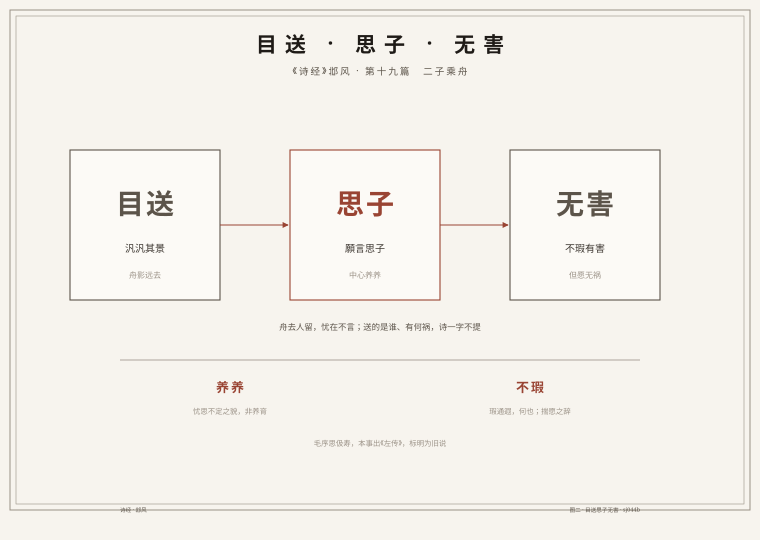

第四十四篇 二子乘舟
邶风 · 之三 SJ044
朗读 · 普通话
依经文正文朗读，句读从文；不配乐、不改速、不加拖腔。全库同一音色（豆包 TTS），非播音员录制。
一 解题
诗三判：
- 谁在说：目送二子乘舟远去的国人。旧说指卫宣公之子伋与寿；诗中只以「子」相称，不道姓名。
- 说什么事：二子登舟，舟影浮浮远去。每念及这两个人，心中忧思不定。舟儿飘飘往赴前方，但愿念着他们——不至于有祸害吧。
- 为何编在此：此篇为邶风收卷。前有《新台》之刺，此篇收于二子之伤；一卷由「礼失」起，由「心不甘」结。事故全在言外，诗只写舟影与人心里的空。
《毛序》：「《二子乘舟》，思伋、寿也。卫宣公之二子，争相为死，国人伤而思之，作是诗也。」——以为国人伤伋、寿争死而思之。
朱子《诗集传》：「旧说：卫宣公二子，谓伋与寿……寿知之，以告伋；伋不可，寿乃窃其旌以行，盗杀之，伋后至，又死焉。国人伤之，而作是诗。」——朱子亦从旧说，而标明「旧说」。
本库的看法：这首诗的骨在「汎汎其景」——二子之去，忧在不言，只写舟影与人心的空。
二子旧说指伋与寿（《毛序》），标明为旧说；诗内只写送别远望，不写争死之事。全篇两句「愿言思子」，一句比一句轻，忧却一句比一句重。
二 经文
第一章
二子乘舟，汎汎其景。願言思子，中心養養。
第二章
二子乘舟，汎汎其逝。願言思子，不瑕有害。
分章：毛传、朱子皆二章，章四句。一章目送其影，二章目送其逝；章法由见影到望远，一层空似一层。
三 韵读
一章陽部绵长，状舟影远去、心思摇漾；二章月部入声收紧，落到「有害」之惧。全篇落脚声是「不瑕有害」——愿其无祸，而惧其有祸。
四 字义与名物
- 二子——旧说指伋与寿（《毛序》），标明为旧说；诗中不坐实姓名。
- 乘舟——登舟而行。
- 汎汎（fàn
fàn）——舟浮飘荡之貌。不是「泛滥」之汎。
- 景——通「憬」，远行之影；一说日光。两说入存疑。
- 願言——愿，每、念；言，语助。愿言即念念。不是「愿意说」。
- 思子——思念你们。子，指二子。
- 中心——心中。
- 養養——忧思不定之貌（一说犹「漾漾」，摇荡）。不是「养育」。
- 逝——往、去。
- 不瑕有害——瑕通「遐」，何也；不瑕有害，即何害、不至于有祸害。与《泉水》同句。
五 今译
第一章
二子登上船，舟影浮浮远远。念念想着你们，心中忧思不定。
第二章
二子登上船，舟儿飘飘远去。念念想着你们，但愿不至于有祸害吧。
译注：「汎汎」译舟浮飘荡；「景」从远行之影；「愿言」译念念，愿为每、念，言为语助；「养养」译忧思不定；「瑕」通「遐」，何；「不瑕有害」是揣愿之辞，但愿无祸。
六 章旨
一章：目送其景，中心养养。舟影在目，心思摇漾不定。
二章：目送其逝，愿其无害。舟人已远，唯余一句祷愿。
两章只写舟去与人思，事故全在言外：送的是谁、往何处、有何祸，诗一字不提。
此即「忧在不言」——越不说，越见放不下。
七 诗教
- 赋：直陈乘舟远去与思子之忧，是赋；无他物起兴，情全在送行实事上。
- 观：可观一「别」。舟影渐远，人心悬空；送别之诗，此篇最短而最空。
- 群：国人共伤二子，此思是一群人之念，非一人私怀。
- 怨：怨而不露；只说思与忧，不道所怨何事。怨藏在「不瑕有害」的祷愿里。
八 分寸与边界
- 不可把「景」解作风景、景色。景通「憬」，远行之影；一说日光，两存不裁。
- 不可把「愿言」解作「愿意说」。愿为每、念，言为语助；愿言即念念。
- 不可把「养养」解作养育、保养。养养是忧思不定之貌。
- 不可把「不瑕有害」解作「已经没有害处」之肯定语。瑕通「遐」，何也；此是揣愿之辞，但愿无祸，非已得无事。
- 不可把争死之事坐进本文。伋寿争死出《毛序》《左传》旧说；诗只写乘舟远去与思，事故在言外。
九 存疑
- 二子为谁：毛序以为伋与寿；他说以为他人。本库标明旧说，诗内不坐实姓名。
- 「景」字：通「憬」，远行之影；一说日光（景即影）。本库从远行之影，存日光一说。
- 「养养」：忧思不定貌；一说通「漾漾」，心摇荡；一作「洋洋」。本库从忧思不定。
- 「不瑕有害」训读：毛传瑕训过差，郑笺以为「于行无过差，有何不可」；一说瑕通遐、胡，何也。本库从遐、何。
- 诗中口吻：一说送行者留者之词，一说国人追思已死二子之词。本库取目送远去，存追思一说。
十 跨典
- 《左传·桓公十六年》：伋、寿争死之事，毛序所系本事；宣公使盗待伋于河上，寿窃旌先行，盗杀之，伋复往亦死。可参此篇所伤。
- 《史记·卫康叔世家》：载宣公、宣姜、伋、寿、朔之事，与《左传》互见；史迹以此二书为据。
- 《邶风·新台》：同卷本事相连；《新台》刺宣公纳媳，此篇伤其二子之死，一前一后，皆卫事之失。
- 《邶风·泉水》：「不瑕有害」同句复用；彼为女子思归之问，此为国人送子之愿，句同而情异。
- 《邶风·燕燕》「瞻望弗及」——同是目送远行；一送兄妹于野，一送二子于舟，皆以望不见收住。
十一 双卡与图
双卡五对：
| 汎汎（舟浮飘荡） |
泛滥（误训） |
| 景（憬，远行之影） |
风景（误训） |
| 愿言（念念） |
愿意说（误训） |
| 养养（忧思不定） |
养育（误训） |
| 忧在不言 |
事故坐实 |

图一 · 乘舟·舟影·河水远去 名物图

图二 · 目送—思子—无害 义理图
读图三处：
- 舟与二人：名物图取舟身、楫桨、舟上二人（背影，冠发、肩线、宽袖、衣裾）三处特写；不画整队行舟。
- 舟影拖水：舟后水面一道淡影渐行渐远，写「汎汎其景」；影不坐实日光一说。
- 义理三格是一条悬望：目送—思子—无害，箭头由望远入祷愿；两尺标出「养养」「不瑕」，见忧在不言。